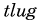
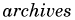

/
/
Coming/Recent Events
次の飲み会・勉強会
About TLUG
東京 Linux ユーザーズグループは、日本のインターネットの黎明期を支えた人々の クリエイティブなパワーから生まれた。Linuxの重要性を認識していた彼等は、 1994年9月に最初の公式ミーティングを開いた。
1994年6月16日に、TLUGは当時唯一のインターネット接続プロバイダーであったTWICSの LINUX カンファレンスとして生まれた。エキサイティングでフレンドリーな雰囲気の中、 お互いに問題を解決を助け合い、Linuxのことを勉強しあった。初期のメンバーの一人は、 次のようにコメントしている。「僕たちは最先端にいて、このネットワークハイテクジャングルを 一緒につくりあげてるような感じだった。すげぇぞ！」
“It felt like we were all on the edge of this frontier and that together we were taming this networked, high-tech jungle.”
TLUG は、非営利ユーザーズグループとして、会員は Linux カーネルと Free Software Foundation のツールに関する情報を交換する。現実とオンラインの ミーティングは英語と日本語で行われる。皆さんの参加を待っています。
Meetings
ミーティングの日時と場所はメーリングリストとミーティングページで告知されます。
過去のミーティングの様子も御覧下さい。
[ Next Meeting | Past Meetings ]
Members
TLUG is made up of members from all over the world. Please see the links below to get to know some of them.
[ Administrative Members | Other Members ]
Multilingualization
Linuxの多言語化に興味があるのなら、日本でのLinuxを扱う店に興味があるのなら、我々のドキュメントを読んで下さい。
[ Documents | Linux in Japan ]
(訳注)このリンクは英語でのドキュメントです。日本語でのドキュメントは
JF等を参照してください。
Get Involved
TLUGの興味を持たれましたら、ぜひメーリングリストにお入り下さい。
過去のアーカイブ（メイン、管理用）は、以下のユーザー名、パスワードで閲覧できます。
/

[ Subscribe/Unsubscribe | List Policy | Archives (Main) | Archives (Admin) ]